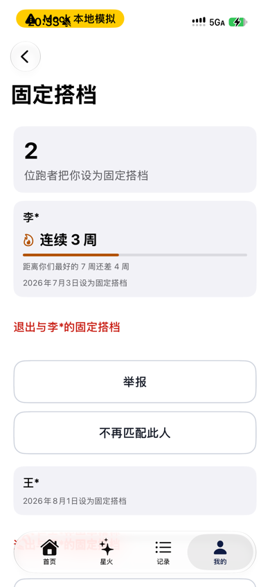

参考图：健康 · 共享
（负责人 iPhone iOS 27 截图，含个人健康数据，不入库）
健康 · 共享：顶部一张说明卡，三行「图标 + 粗标题 + 一句话」；人在下面的列表里，点进去才看到「停止共享」（苹果帮助页 HT212629）。

现状：每位搭档下面跟一行红字「退出」+ 两个通栏按钮「举报 / 不再匹配此人」。3 位搭档 = 9 个操作铺在列表里；卡片本身点不动。
改后 · 列表：一人一行，只放内容（名字、连续周数或设为搭档的日期），右侧小箭头进详情。操作全部挪进详情页 —— 这是苹果「列表行只放内容」的做法（调研索引 10-30 行）。底部「关于」照健康的说明卡写两行。
9:415G ▮
李*
2026年7月3日设为固定搭档
3周
最好 7 周 · 还差 4 周追平
一格一周，满 7 格追平最好成绩
你们每周至少一起跑完一次，就多记一周。断了从第 1 周重新算，最好成绩会保留。
改后 · 搭档详情（新页）：顶部大字名字 + 设为搭档的日期；火花卡把「3 / 7 周」画成 7 格，比一根细进度条好读。三个操作分两组放在最下面，红色「退出」单独一组，点了仍弹现在那句确认。
9:415G ▮
固定搭档
👥
固定搭档
🏃
跑者来选跑者和你一起跑完之后，可以把你设为固定搭档。
改后 · 空状态：现在只有一句灰字。照健康「共享」的说明卡，告诉第一次来的人这是什么、怎么来的。没有按钮 —— 陪跑员不能自己加搭档（只有跑者能设）。
参考图：健康 · 步数详情
（负责人 iPhone iOS 27 截图，含个人健康数据，不入库）
健康 · 步数详情：一个大数字 + 时间范围 → 柱状图 → 「提要」用一句话说变化。
参考图：健康 · 步数（往下）
（负责人 iPhone iOS 27 截图，含个人健康数据，不入库）
健康 · 步数（往下）：提要卡「今年…与去年相仿」+ 两根对比条；最后「关于步数」解释这个数怎么来的。
9:415G ▮
服务成就
12小时40分钟
累计 · 共陪跑 18 次
6月7月8月9月10月11月
这个月的陪伴时长比前 5 个月平均多。
3小时20分钟
11 月
1小时32分钟
前 5 个月平均
改后 · 上半：头卡从「实心蓝块 + 已完成 N 次」改成健康详情页的样子：累计陪伴时长大字 + 近 6 个月柱状图（本月深青，其余浅青，虚线是平均）。提要卡照健康：卡名 → 一句结论 → 细灰分隔线 → 大数字小单位 → 标签写在横条里（本月深青白字，平均浅灰深字）。黄框：柱状图要连拉 6 个月数据，需要你定。
9:415G ▮
距离一星还差 88 小时
一星 100 · 二星 300 · 三星 600 小时
关于服务成就
陪伴时长从你点「开始服务」算到订单完成，减去暂停的时间。以上数据来自平台记录，供你自己查看；向学校或单位申报星级，需要通过全国志愿服务信息系统办理。
改后 · 下半：「累计里程 / 评分」两张半宽卡，评分卡能点，进③评分页。国标星级改成圆环（12 / 100 小时），仍和平台徽章分两块（契约要求）。徽章块顶上放「下一枚」进度，「全部显示」任何时候都能进徽章页（现在解锁 ≤ 4 枚的人永远进不去）。最后是「关于」，沿用现有免责声明。
参考图：健康 · 睡眠评分
（负责人 iPhone iOS 27 截图，含个人健康数据，不入库）
健康 · 睡眠评分：一个分数 + 一句话解释它怎么来的；下面是组成这个分数的明细。
9:415G ▮
评分
跑者跑完后评价这次陪跑：「很好」记 5 分，「一般」记 4 分。
好评徽章
未获得 · 评价条数和评分都达到要求后获得
最近的评价
改后 · 评分页：大字平均分 + 一句话说分数怎么算（像睡眠评分）；好评徽章是否已获得（只有「下一枚」正好是它时才有进度，否则不写数字）；「最近的评价」按次列出很好 / 一般，点进那次的跑后记录。黄框：要不要逐次显示，需要你定。后端没有评分分布、标签、评语原文给陪跑员，这些都不画。
首页「评分」卡怎么变可点
首页 v3 的评分半宽卡现在故意不画箭头（`VolunteerHomeSummaryCards.swift` 里 `hasDestination` 对评分返回 false，注释写「仓库里没有评价列表页」）。这个文件是 PR #696 新加的，正在被另一个会话修改。
做法：先在本 PR 里做好评分页，并从「服务成就」的评分卡进去；等 #696 合并后，再单开一个小 PR 改那一行，让首页评分卡也进评分页。这样不碰对方正在改的文件。
参考图：健身 · 奖章
（负责人 iPhone iOS 27 截图，含个人健康数据，不入库）
健身 · 奖章：顶部「加油」卡 = 离你最近的那一枚和进度；下面按类别分块。
⚠️ 「健康」App 里没有奖章，苹果把奖章放在「健身」App，所以这一组参考「健身」。
参考图：健身 · 奖章（某一类）
（负责人 iPhone iOS 27 截图，含个人健康数据，不入库）
健身 · 奖章（某一类）：三列网格；没拿到的画成灰色线框，名字下面写进度和一根细进度条。
9:415G ▮
徽章
已获得 2 枚 / 共 7 枚
加油
陪跑 10 次
7 / 10 次 · 再陪跑 3 次
改后 · 徽章页：现在是一张系统列表、只列已解锁的、点不动。改成健身奖章的样子：顶部「加油」= 下一枚和进度；7 枚全部按类别排成三列，已获得是彩色圆章，没获得是灰色线框；每枚都能点。黄框：没获得的也要画出来，需要客户端写死 7 枚清单，需要你定。照健身「每一类一种形状和材质」：陪跑次数 = 银边蓝面六边形，正中刻次数；陪伴时长 = 金边深色圆章；评价 = 银边琥珀盾形。没获得的只画同形状的灰线框（健身也是这样）。实现用 SwiftUI 自绘形状 + 渐变，不用图片资源，深色模式和放大字号都能跟着变。
9:415G ▮
✕
陪伴 10 小时
已获得
累计陪伴满 10 小时。
陪跑 10 次
已完成 7 次，共需 10 次
改后 · 点开一枚（弹层）：上面是已获得的样子（金边圆章），下面是未获得的样子（实际一次只弹一枚）。大奖章 + 名字 + 状态 + 一句怎么获得。不写获得日期：后端明说没有解锁时间（「宁可不给也不编」），健身奖章下面那行日期我们画不出来。